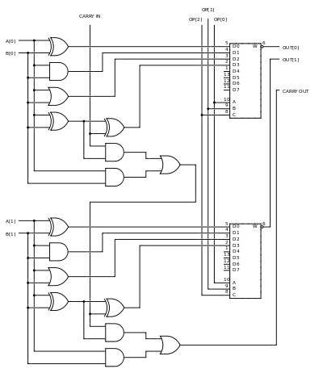

Unidade lógica e aritmética
Definições de ULA
O matemático John von Neumann propôs o conceito de ULA em 1945, quando escreveu um relatório sobre os fundamentos para um novo computador chamado EDVAC. Pesquisas sobre ULAs ainda são uma parte importante da ciência da computação
A tecnologia utilizada foi inicialmente relés, herança da telefonia, e posteriormente válvulas, herança da radiofonia. Com o aparecimento dos transistores, e depois dos circuitos integrados, os circuitos da unidade aritmética e lógica passaram a ser implementados com a tecnologia de semi-condutores.
A ULA executa as principais operações lógicas e aritméticas do computador. Ela soma, subtrai, divide, determina se um número é positivo ou negativo ou se é zero. Além de executar funções aritméticas, uma ULA deve ser capaz de determinar se uma quantidade é menor ou maior que outra e quando quantidades são iguais. A ULA pode executar funções lógicas com letras e com números.
Primeiro desenvolvimento
No ano de 1946, von Neumann trabalhou com seus colegas no projeto de um computador para o Instituto de Estudos Avançados de Princeton (Princeton Institute of Advanced Studies -IAS). O computador IAS se tornara o protótipo de muitos computadores. Na proposta, von Neumann descreveu o que ele acreditava que seria preciso na sua máquina, incluindo uma ULA.Von Neumann disse que a ULA era uma necessidade para o computador porque ela garantiria que o computador calcularia operações matemáticas básicas, incluindo adição, subtração, multiplicação, e divisão..[1] Ele então achava razoável que um computador contivesse um órgão especializado para essas operações.[1]
Primeiro desenvolvimento
Muitas das ações dos computadores são executadas pela ULA. Esta recebe dados dos registradores, que são processados e os resultados da operação são armazenados nos registradores de saída. Outros mecanismos movem os dados entre esses registradores e a memória. Uma unidade de controle controla a ULA, através de circuitos que dizem que operações a ULA deve realizar.
Operações complexas
Um engenheiro pode projetar uma ULA para calcular qualquer operação, no entanto isso gera complexidade; o problema é que quanto mais complexa a operação, mais cara é a ULA, mais espaço utiliza do processador e mais dissipa energia.

Computação em nuvem?
Os principais provedores globais de nuvem pública hoje, são a Amazon AWS, Microsoft Azure IBM e Google.

Nova Tecnologia
Utilizada pela Silicon Quantum Computing Pty Limited e deverão ser usadas para a criação e comercialização de computadores quânticos em larga escala.

O que é nanotecnologia?
Entendimento e controle da matéria em nanoescala. Ela atua no desenvolvimento de materiais e componentes para diversas áreas.